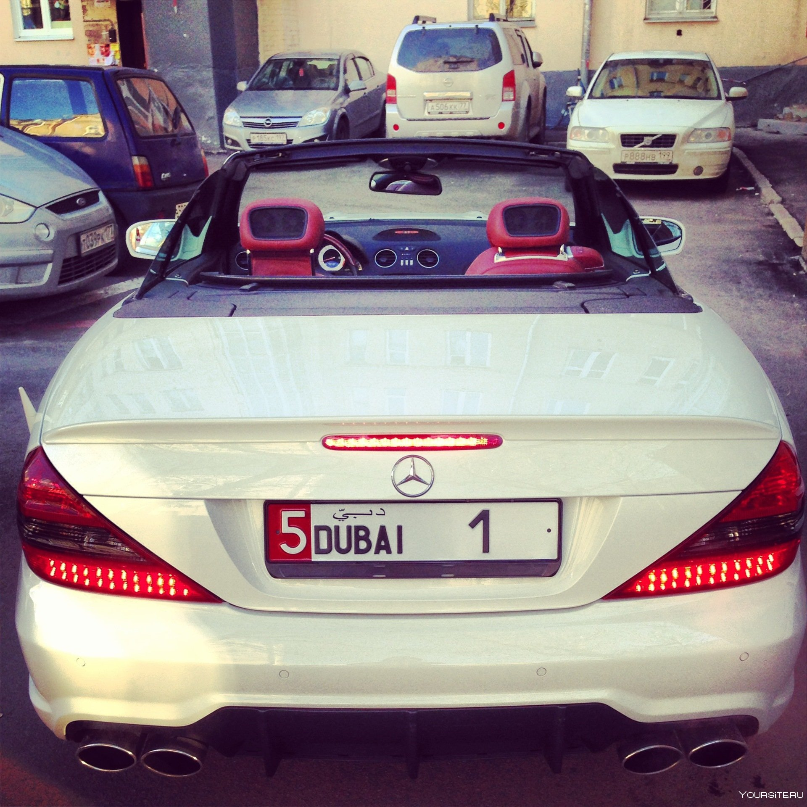
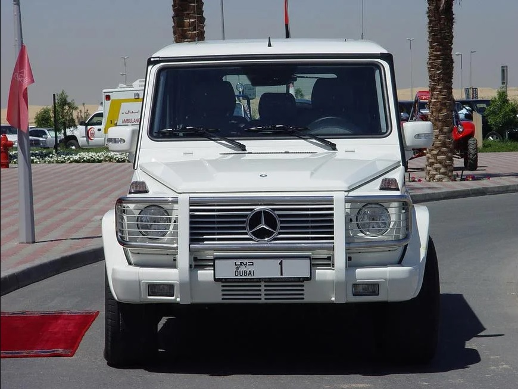

Mercedes-Benz ([mɛʁˈtseːdəs ˈbɛnts] или [-dɛs-]; рус. Мерсе́дес-Бенц) — торговая марка и одноимённая компания — производитель легковых автомобилей премиального класса, грузовых автомобилей, автобусов и других транспортных средств, входящая в состав немецкого концерна «Mercedes-Benz Group». Является одним из самых узнаваемых автомобильных брендов во всём мире. Штаб-квартира Mercedes-Benz находится в Штутгарте, Баден-Вюртемберг, Германия.
Наименование торговой марки было принято в 1926 году в результате слияния двух конкурирующих фирм, Benz & Cie. (основана Карлом Бенцем) и Daimler-Motoren-Gesellschaft (основана Готлибом Даймлером), в единый концерн — Daimler-Benz. Название бренда образовано от двух наиболее значимых автомобилей объединённых компаний — Mercedes 1901 года и Benz Patent-Motorwagen 1886 года.
В 2018 году бренд Mercedes-Benz оценивался в 48,601 млрд долларов, удерживая второе место (после Toyota) среди компаний-производителей автомобилей и восьмое место среди всех брендов мира. По оценке BrandZ, в 2018 году марка входила в список Top 100 Most Valuable Global Brands, где занимала 46 место среди наиболее дорогих брендов со стоимостью в 25,684 млрд долларов. В 2019 году бренд Mercedes-Benz оценивался в 60,355 млрд долларов, тем самым занимая первое место в рейтинге компаний-производителей автомобилей. В январе 2023 года бренд Mercedes-Benz по оценке Brand Finance среди автобрендов занял второе место, оцениваясь в 58,8 млрд долларов, уступив первое место бренду Tesla.